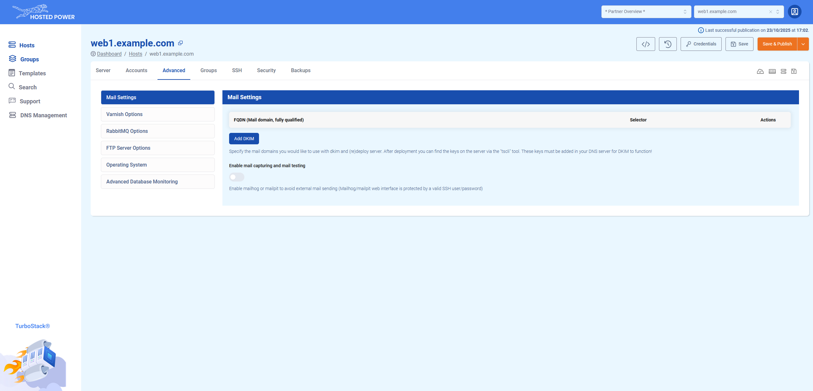
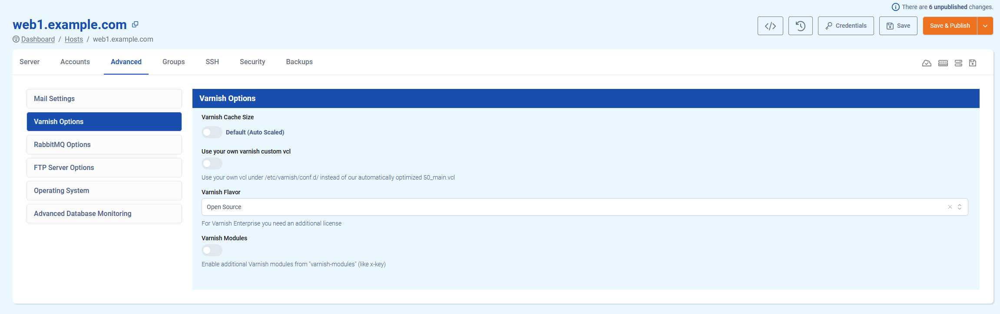
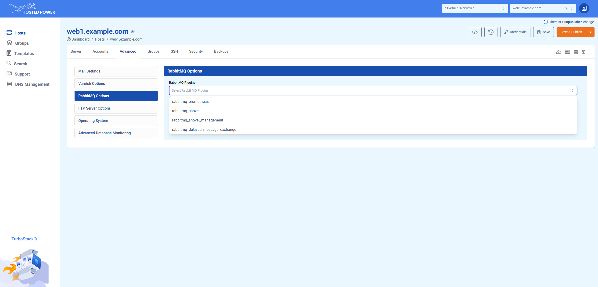
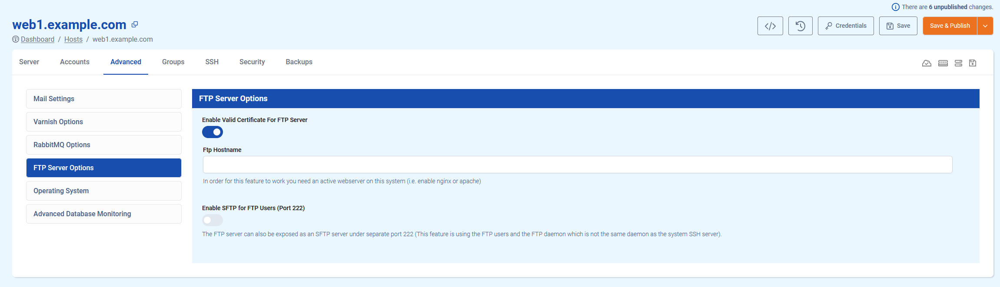
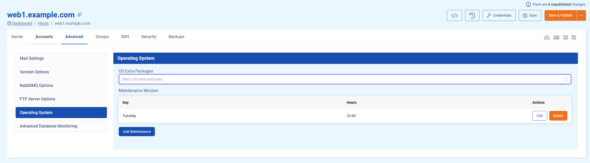
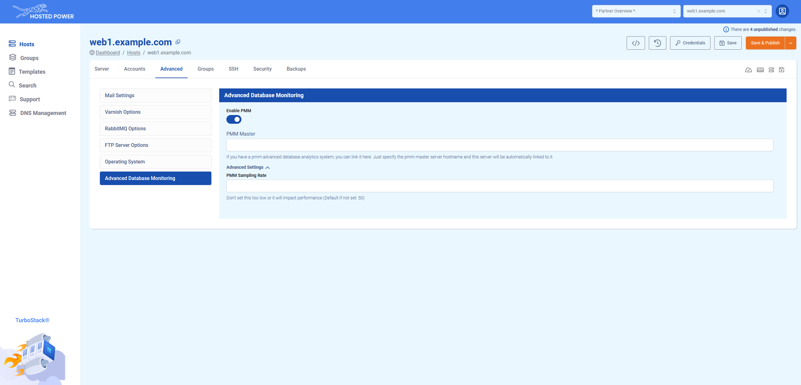

Advanced
The advanced tab offers some more advanced configuration options for specific services, such as mail, Varnish, RabbitMQ, FTP, etc. This article describes the options currently available.
Mail Settings

DKIM
DKIM (DomainKeys Identified Mail) is an email authentication method that helps prevent email spoofing. It works by adding a digital signature to outgoing messages, which receiving mail servers can verify using the public key published in the sender’s domain DNS records. This sections allows you to easily set up DKIM for your mail domain.
- Fill in the FQDN (Fully Qualified Domain Name), which is the domain you want to mail from.
- Choose a selector for the DKIM record. This selector will be used as the subdomain part of the record.
- SSH to the server and use the command
tscli dkim recordsto acquire your DKIM record. - Create the DKIM record in your domain's DNS settings
- SSH to the server and use the command
tscli dkim validateto check if the DNS record was created correctly. - All done!
info
DKIM is part of your domain's mail deliverability optimisation. For more information on mail deliverability, take a look here.
Mail Devtool - Enabling mail capturing and mail testing
TurboStack allows you to use either Mailpit or Mailhog to test your mailing. Once activated, you can reach the GUI through the URLs https://<hostname>/mailpit or https://<hostname>/mailhog respectively. Here, a basic auth prompt will appear, where you can enter the system user's credentials.
info
We currently recommend Mailpit over Mailhog, as the Mailhog project is no longer receiving updates!
Varnish Options

Varnish Cache Size
This value determines the amount of memory that can be used by Varnish to store cached content. The default setting auto-scales based on your server flavour, but can be set to a size of your preference.
Use your own Varnish custom VCL
Your Varnish is set up to use a default VCL (Varnish Configuration Language) based on and optimised for your selected app type. However, you can use your own VCL if you wish. To do so, toggle this option on and add your VCL file to the directory /etc/varnish/conf.d/ on your server.
Varnish Flavor
Choose between the Open Source and Enterprise versions of Varnish. The Open Source flavor is free, while the Enterprise version requires you to buy a separate license.
The Open Source flavor includes an option to enable Varnish modules.
RabbitMQ Options

The RabbitMQ Plugins options allows you to easily install RabbitMQ plugins.
FTP Server Options

Enable Valid Certificate For FTP Server
Generate an SSL certificate for FTP connections using a ostname of your choice. This hostname must point to the server IP in order to work!
Enable SFTP for FTP Users
Enables SFTP connections over port 222 using the existing FTP daemon and users. This does not work over port 22, as this is reserved for the SSH service.
Operating System

OS Extra Packages
A non-exhaustive list of packages available for automated installation. Please note this list only includes some of the more common packages! More info on installing packages, including ones not available in this list, can be found here.
Maintenance Window
Set a maintenance window for patches and updates that require rebooting the server. This allows you to choose your least critical timing for essential updates.
Advanced Database Monitoring

Allows you to set up the database monitoring tool PMM (Percona Monitoring and Management) on your TurboStack.
If you have a PMM advanced database analytics system, you can fill in the PMM master server's hostname to link your TurboStack server to it. The PMM Sampling Rate can be set in Advanced Settings.
More information on PMM can be found here.